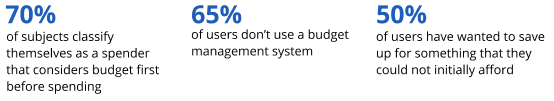
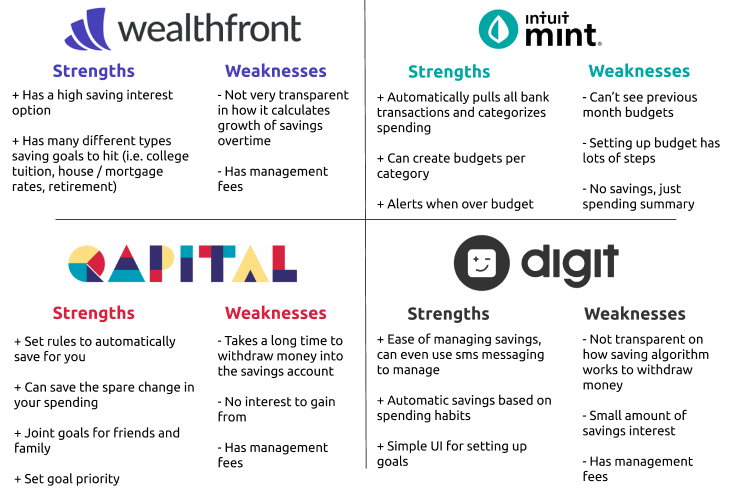
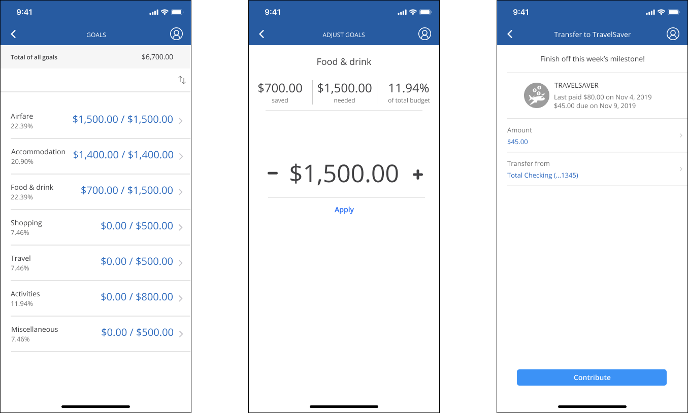
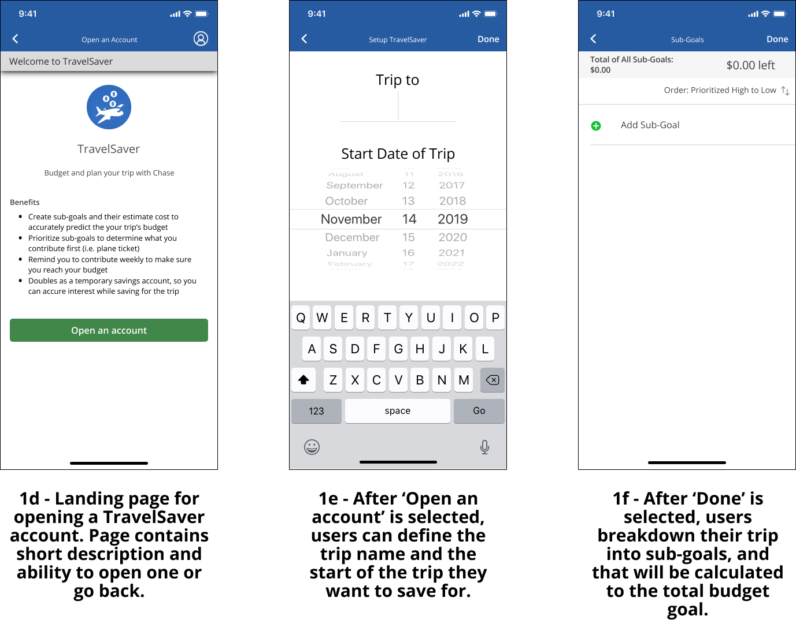
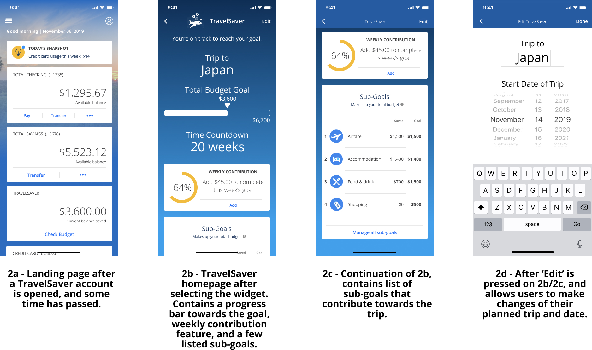
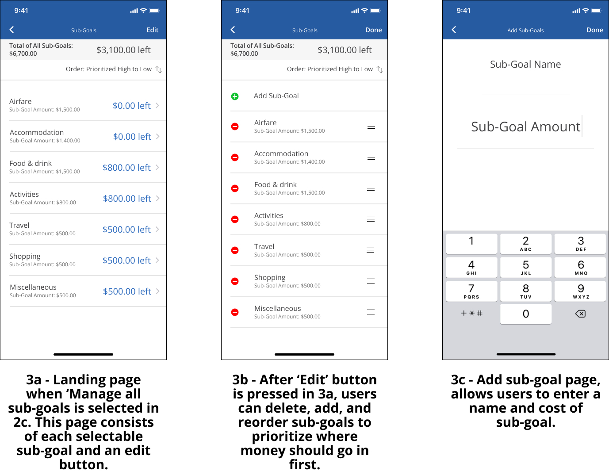
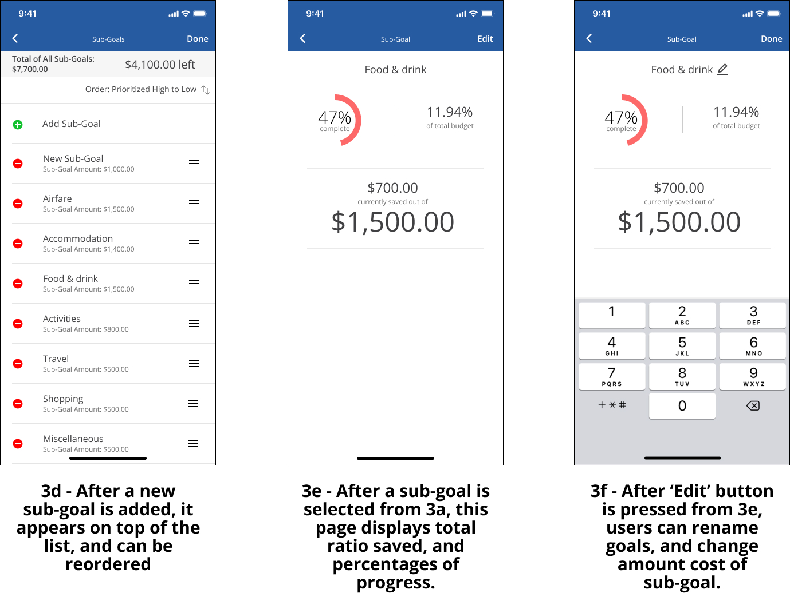
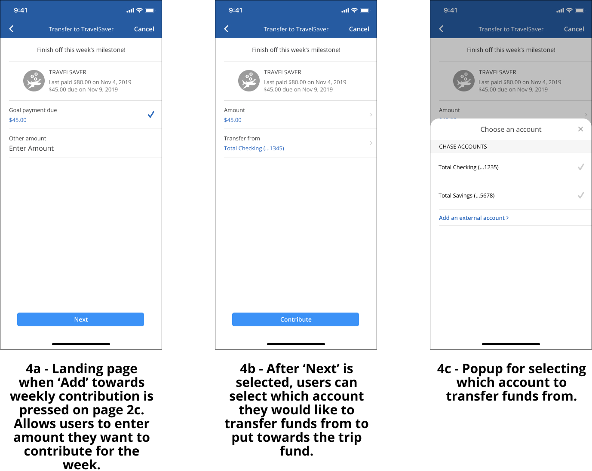

Chase: A Case Study
Project Overview
As part of UC San Diego's "Data-Driven UX/Product Design" course,
I was tasked in a team of three to extend or redesign a feature that helps a specific
type of user save for a trip. Within the ten-week time frame of the course,
our team learned about the UX/product design process consisting of interviewing,
wire framing, competitive audits, and high fidelity prototyping using Figma.
Within the team, I specialized on user testing and analysis, as well as creating
prototypes using Figma.
Our User
Our team's target audience were young adults (ages 18 - 25). We believe they are ideal target users based on the following reasons:
- The young adult population accounts about 15% of the United States (approximately 40 million) according to the 2010 Census Summary from the U.S. Census Bureau.
- As we, the team, are part of the young adult population, we have many college friends and acquaintances that we can tap into their thoughts about saving. Through our work and personal relationships, we also have a good handful of those who are more mature young adults that we can contact about how they go about saving.
- Many young adults have growing pains financially.
User Goals
- list an expense they consider as high-cost
- define a time frame to when they should have saved enough money by
- to be more in control of their budgeting in order to achieve the goal
- develop better money handling skills
The Problem
"Young adults should be provided a way to keep track of their saving so that they can successfully buy a high-cost expense they anticipate ahead of time and build better saving habits."
There are often times when we knew we had to save up for a large purchase/expense, but leading up to it, we did not budgeted enough, leaving us to delay or even skip the purchase or look into less than ideal alternatives.
For example, one of us knew a year in advance that he needed to save at least $6k for a three-week vacation in Japan. Because he did not keep himself accountable on his spending and not regularly checking his bank account, he ended up short of the budget he wanted to save in the beginning, which forced him to replan what he was going to do in Japan.
With our saving feature, he could have defined how much he wanted to save within a time frame, and the app will help him manage how he is doing by showing his progress on it and send him regular notifications to keep him on track. With that said, this feature could be a great and feasible way to reach their saving goals, and we can help them realize that.
Need Finding & User Research
The first step of our design process was to conduct need-finding to understand our target audience and issues they had with the current Chase mobile application.
Surveys:
Our team chose surveys as our primary research method. We wanted to find common patterns or trends that people share while saving for a high-cost purchase. This allowed us to narrow down our user target and gives us a general consensus to what users probably want and don’t want in a saving feature.
Since finance can be a sensitive and confidential matter, we believed that some users would not feel comfortable sharing financial information through direct obeservation, so we kept our surveys as anonymous to encourage more people to take the survey and gain more insight into our research goals. We left an option for users to leave their emails if they allow us to interview them.
Interviews:
Our team interviewed survey participants who were willing to give us more information
about:
how they determine if they can spend on an item or not,
how they go about saving for a long period of time,
and how they navigate and budget with their banking apps and what can be improved.
We chose interviews as our secondary research method because made up the qualities that surveys lacked:
it allowed us to ask follow up questions based on their answers,
and it gives us more valuable research that our team needs, which may be misinterpreted by the questions we ask in surveys
Research Findings
The major findings of our surveys and interviews are summarized below:
 Core Pain Points:- Lack of visual charts or trend maps
- Inflexible UI and functionality
Subjects expressed how current applications were lacking data from previous months. They expressed how they would like a trend or pie chart for savings and spending. Additionally, they expressed that they had a lot of manual work to do such as keeping a spreadsheet up to date, and how it would be easier if data was automatically inputted from banking information and added to a visualization.
Subjects expressed how current banking applications have an undesirable UI that provides just the baseline functionality of transactions and savings. Feedback for functionality is that it is sometimes slow or unresponsive, and hard to find features within the application.
Design Process
Competitive Analysis
A prime motive towards this redesign was inspired by our experiences with current budget management applications. Thus, to gauge how we should improve Chase, we performed a competitive audit on existing money management applications to weigh pros and cons of potential features.
Wealthfront, Qapital and Digit are successful savings apps that center around ease of use via automatic deposits. With an easy way to customize goals and a passive way to build savings towards them, they make it easy to set and forget such that saving towards the goal is not a time consuming activity. We should maintain the simplicity of use and passive savings aspect so that saving is not a burden for our product feature. Mint allows for organizing budgets to see spending habits and promotes better spending. Ease of organizing spending and goals should be part of the solution for a savings app.
UX Flows
We created user flows to see how users could accomplish two core tasks. The tasks were to see current savings progress, and adjust budgets. Our goal was to make the experience of viewing current progress and adjusting budgets as minimal as possible.
Prototyping
Paper Prototype A
The next step of the design process was to create paper prototypes. We created two prototypes that had different methods of displaying a user's progress towards a goal and way to add contributions. Even though the prototypes achive the same thing (UX Flow to check progress and goals), prototype A is more true to how the Chase app is layed out: having sections that are easy to navigate and intuitively organized. Prototype B takes on a more different and aesthetic look: a more minimalist approach that tells a good amount of information in a concise manner. We made our prototypes this way to see which appeals to our target audience more. Then we will use the most popular one to design the feature based on their feedback. Prototype A is shown below.

User Testing Conclusions:
We decided to create a mix of both of our prototypes, since users really like the detailed flow and intuitiveness of A and the minimalist of B. Now the challenge is to achieve the winning balance between the two because being detailed and being minimal can work against each other in many ways. We will continue to cycle between refining and testing our prototypes to make sure we have the best UX design possible that is intuitive and compact for our travel saving feature that users can benefit from.
High Fidelity Prototypes
First Pass - High Fidelity Prototype
This is the first iteration of our design after paper prototyping and user testing.
This prototype features:
- minimal landing page
- progress bar towards savings progress instead of percentages or pie charts
- minimal "see all goals" details screen

Final - High Fidelity Prototype
This is the final iteration of our design after TA feedback. We revised our first iteration by:
- adding onboarding feature
- adding ability to edit and move sub-goals
- revising ability to edit sub-goal amounts using number pad and keyboard





Final prototype thoughts:
A key insight that I gained was that target users strongly favored simplicity and minimalism in regard to financial management applications. I observed this when we had two paper prototypes, and one had more data and functionality on the screen than the other. Most users preferred the minimal prototype. Furthermore, as we iterated on that design people still critiqued the flow and user experience, wanting it to be faster and to cut unnecessary data. These iterations resulted in our final extension that had minimal steps to accomplish a task, and carefully selected ways to display data. We had to carefully select how we were displaying information because users would get confused when trying to interpret it. For example, we were displaying progress as a fraction, but users preferred progress bars, and users did not like pie charts in regards to displaying progress towards a goal. During user testing this confusion would get them hung up on certain screens for longer and make them ask questions. Overall, we hope that we were able to create a product that is as minimal as users would expect, yet provide essential features missing in existing applications.
Reflection
Ultimately, I learned a lot this case study about the design process and user experience. I learned that user testing and feedback is critical in the design process, and that each reiteration brought about a better product. It was satisfying to see how we found an issue among our target population regarding saving up for a trip and were able to design a better and better product for our target as we took their feedback into account.
My favorite part of this redesign project was the experience learning Figma. The application opened my eye for design and allowed me to quickly make multiple components and try out different user experiences.
The Figma Teams feature that allowed collaboration, pre-existing icons and themes, and the multiplatform UI made the design process more detailed and enjoyable.
Lastly, I really liked how our feature was just an extension on the Chase mobile application. We just added a module within the Chase application, so it would not conflict with the current user experience for veteran Chase users. I look forward to when we implement the functionality, and then perform more user testing. More user testing would help us focus in on the question if we made it too minimal? A concern is that we may have desired functionality that we are missing, and user testing would address that.